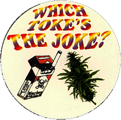

|  |
| |
Tobacco smoking kills more persons each year than AIDS, heroin, crack, cocaine, alcohol, car accidents, fire, and murder combined. Cigarette smoking is as addictive as heroin, complete with withdrawal symptoms, and the percentage of relapses (75%) is the same as for “kicking” cocaine and heroin users.
It is far and away the number one cause of preventable death in the U.S. today. Tobacco smokers have ten times the lung cancer of non-smokers, twice the heart disease, and are three times more likely to die of heart disease if they do develop it.
Yet tobacco is totally legal, and even receives the highest U.S. government farm subsidies of any agricultural product in America, all the while being our biggest killer! What total hypocrisy!
In the U.S. one in seven deaths are caused by smoking cigarettes. Women should know that lung cancer is more common than breast cancer in women who smoke and that smoking on the pill increases cancer and heart risks dramatically.
Seven million dollars a day promotes the tobacco business, and it is estimated that the cigarette industry needs about 3,000 new smokers a day to replace those who quit or die each day from smoking.
Kentucky’s principal business and agriculture for 100 years (until 1890) was the healthful, versatile, and useful cannabis hemp. It has since been replaced by non-edible, non-fibrous, soil-depleting tobacco, which is grown in soil fertilized with radioactive materials.
U.S. government studies have show that a pack-and-a-half of tobacco cigarettes per day over a year for just one year is the equivalent to your lungs of what some 300 chest x-rays (using the old, pre-1980s slow x-ray film and without using any lead protection) are to your skin.
But while an x-ray dissipates its radioactivity instantly, tobacco has a radioactive half-life that will remain active in the lungs for 21.5 years.
Former Surgeon General C. Everett Koop said on national television that radioactivity contained in tobacco leaves is probably responsible for most tobacco-related cancer.
No radioactivity exists in cannabis tars.
(National Center for Atmospheric Research, 1964; American Lung Assn.; Dr. Joseph R. DiFranza, U. of Mass. Medical Center; Reader’s Digest, March 1986; Surg. Gen. C. Everett Koop, 1990.)

illustration © Derrick Hare from Velocity; courtesy of 1-800-HEMPMAN
IMPORTANT NOTE: This image may NOT be reused in your own personal web pages. Thank you for honoring the copyrights of the many donors to this CD-ROM.
the authorized on-line version of Jack Herer’s “The Emperor Wears No Clothes”
| previous page | Chapter 15 | next page |
|
 |
 |
 |
 |